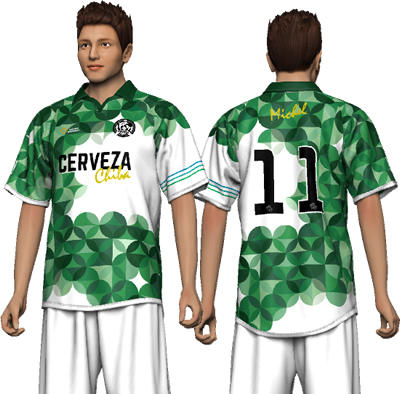
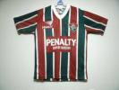
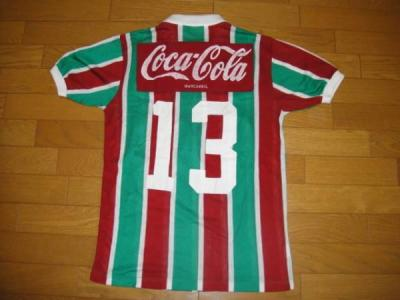

今日は体験参加の北さん含めて、１３名の参加がありました。ほんと１０名以上の参加が続いていて嬉しい限りです。また、何より嬉しいのは（たまに忘れている人はいますが）、規約を守ってほとんどの皆さんがきちんと前日までに出欠登録をきちんとして頂いていることです。今後ともよろしくお願いしますね。
今日は朝、現地に行こうとしたら、わけわからんポールにやられて、わだっちと浜さんとで悪戦苦闘しました。でも結局、オヤジは何も言いに来なかったですね（笑）
んで、いつもの場所もうわ、取られてるって思ったらいつのまにか居なくなってくれてました。今日は着いた時はちょっと晴れ間もあったのですが、練習開始して、風も涼しくなって、どんよりしていい感じだったのが、通称「柿右衛門のおしょうすい」が何度かあって、ほんとびちゃびちゃになりながらの練習でした。まあ、最後はまた雨が止んだから良かったですが、この季節じゃなければ間違いなく撤収なくらい、雨が酷い時間帯が２回ほどありましたね。癒しの木が、いつもと違い雨からも守ってくれました。
参加された皆さん、風邪ひかないように気をつけてくださいね。
そんな感じで、今日は途中避難したり、びちゃびちゃになりながらでしたが、最初は２人でのパス練習から始めて、次はシュート練習でしたが今日は、ちょっといつもと違い、ポストでボールを受けて、振り向いてマーカーをドリブルしてその後にシュートって感じでしました。実際の試合でもボールを受けて前を向いてドリブルとかもありますので、いい練習になったと思います。その後は実際にバックを置いて、バックをかわしてシュートってアレンジもしましたが、ボールを受ける前に後ろを確認するということを意識してもらえたらと思います。
次に２列に並んで、片方から反対サイドにボールを蹴って、もう片方がちょっと前でまた反対にクロスして、最初にだした方がセンタリングして、後の方が走り込んでシュートみたいな感じでしました。試合でも再度チェンジが重要になってくると思います。
次は初トライでしたが、２対２をしました。これがしんどかった。ゴール両サイドに２チームが並んで、空いている人が真ん中からボールを蹴って、蹴った瞬間に取りに行って、先に取ったほうが攻めという感じでしたが、最初にダッシュが結構大変でした。あと、真ん中の蹴る人によって左に行ったり、右に行ったりとおもろかったですが、まあ今日みたいな涼しい時じゃないと出来ないかなって思いますね。
その後は３チームに分けて○○○TVをしました。やっぱりうちの基本はこれっすね（笑）。
んで、最後に６対７でミニゲしましたが、最初のゲームの時に雨が猛烈になって、もうどうでもいいわ状態（笑）。２ゲーム目からは雨も止んで楽しく出来ました。でもみんな滑ってましたね、まあ一番滑ってグダグダだったのは最後のミニゲの時のチーム決めの僕の対応だったと思いますが（涙）、まあ、こんなまとめ役でご勘弁願います。
全体的には柿右衛門の暴走が止まらなかった気が、ごりんさんは迷惑被るし、ほんまわだっちとのお下品コンビはなんとかして欲しいものです。でもお二人によれば一番の筆頭者はゆうちゃんらしいですが（笑）。それにしても走るだけで笑いが取れるのは柿さんずるいっす（笑）
まあ、こんな感じの一日でした。
本日、参加された皆さんお疲れ様でした。



ユニフォーム、緑系を集めてみました。 画像小さくてすみません～ どこのクラブか忘れました。確か南米の・・・・
僕の方のユニホームはプレミアリーグと下部リーグを行ったり来たりしている２チームで
上の画像がブラックバーン・ローヴァーズＦＣ（２００８年当時のユニ）で下の画像がクイーンズ・パークレンジャーズＦＣ（こちらは今季です）です。
今週末までに他の提案がなければ、この中から決めていきたいと思いますので、他に希望がある方は早めにアップお願いします。
再度確認ですが、どのユニもブランド（メーカー）のマークとスポンサー等の表記は出来ませんので、そういったものが無いものとしてイメージして、デザインだけで考えてくださいね。右上にエンブレムは付きますが前はそれだけの予定です。後ろに背番号と名前が入る感じになると思います。
先週がお休みになったんで、今日は２週間ぶりでしたね。
たまに、涼しい風が吹いてましたが、それでも暑くてじめじめでしたね。そんな中、体験参加の方を含めて、１１名の参加がありました。
ただ、急遽体調不良で欠席の方も居られましたし、夏風邪が流行っているみたいなので皆さん、気をつけてくださいね。
今日もいつもどおり、シュート練習からセンタリングシュート、攻めと守りと、ミニゲでしたが、結構いいプレーも多く、その時にナイスパスの言葉や拍手、失敗してもどんまいが自然に出ていたので、ほんといいメンバーばかりで良かったなって思います。
サッカー中も以外でもまあ、いつもどおりＷＫコンビのお笑いコントが炸裂してましたね。最後は森ちゃんが前ちゃんにお見事にやられてミニゲを終わりました。
体験参加の菅さん、足の筋を痛めたみたいですので、ほんと無理しないでくださいね。
んで、今日は活動が終わってから６名でユニの構想を練りに、作成をお願いする店まで行って、いろいろアドバイスをもらいました。
完全にオーダーから作れるメーカーで考えてますが、もちろん、いろんなチームの既存品も作成可能（但し、メーカー名のロゴと、スポンサー名は入れられないですが）で、何点かこの掲示板にアップして、みんなに選んでもらって、それを元に多少変更したりして、見積もりを取って行くという感じになりそうです。今日の案ではセルティックの昔の分（中村俊介が在籍していたころ）とかありましたが、僕も何点か適当にいいなって思ってのをアップしておきますが、メンバーの皆さんもいいなって思うのがあればこのサイトにアップしてもらえたらと思います。
何点かの中で、選んで、それを元に作成していこうと思ってます。
ちなみにエンブレムはだいたい決まりました（笑）、柿右衛門のこだわりで鳥？？（実際はグリフォン）が入っています。
ちなみにお店に行く前にご飯行きましたが、年始依頼の久々感が良かったです。また、機会があれば行きましょう。忘年会は出来たらいいなあ。
本日参加された皆さん、お疲れ様でした。